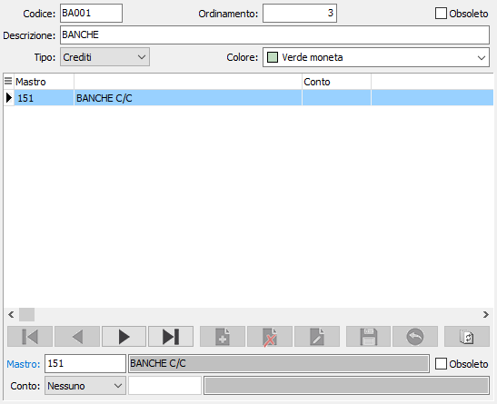

Definizione raggruppamenti
La procedura contiene la codifica che permette di raggruppare i mastri o i conti per la gestione dei grafici, presenti nell'analisi dei flussi finanziari

Per ogni raggruppamento sono presenti i seguenti dati:
Ordinamento: determina l'ordinamento del raggruppamento nella maschera dei grafici.
Tipo: determina se si tratta di crediti o di debiti.
Colore: indica il colore con cui verrà visualizzato il raggruppamento nella visualizzazione dei grafici.
Nella parte bassa della maschera devono essere indicati i mastri, ed eventualmente i conti assegnati al mastro inserito, che devono essere raggruppati, nel caso di tipologia "Crediti" è possibile associare mastri definiti come "Attività" mentre per i "Debiti" è possibile associare mastri definiti come "Passività".
Nel caso in cui si voglia associare solo il mastro, senza il dettaglio del conto, è necessario indicare sul campo "Conto" il valore "Nessuno", come indicato nell'esempio visualizzato sopra.
Non è possibile associare lo stesso mastro o lo stesso mastro/conto a raggruppamenti diversi.